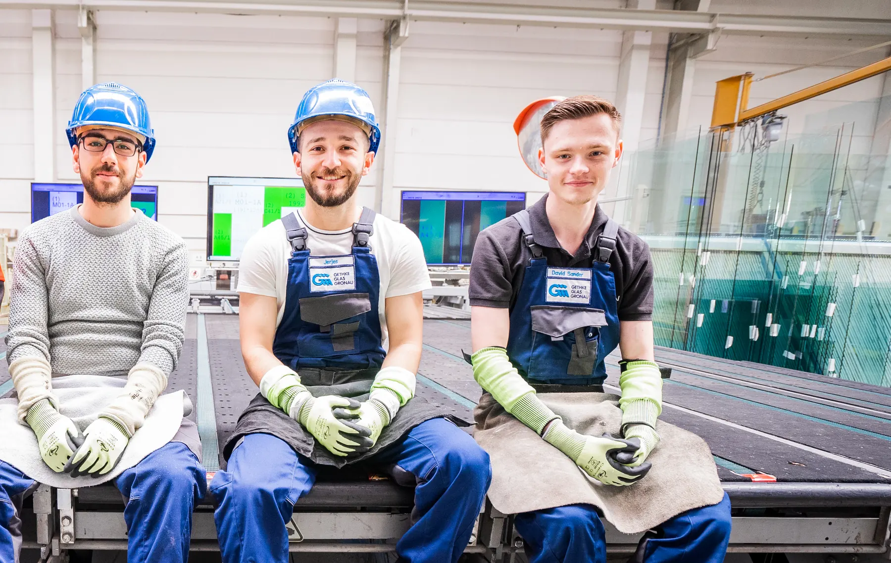
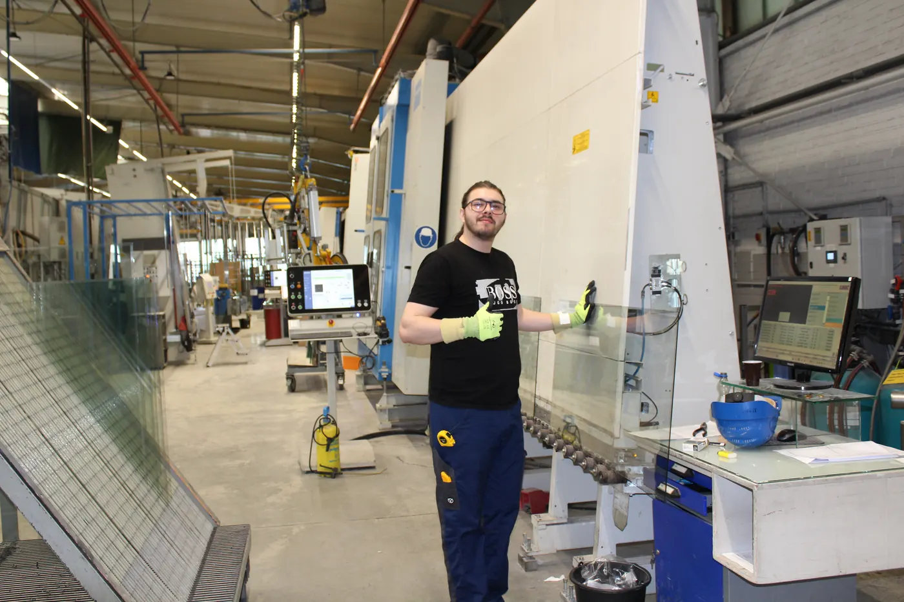

Bis zu 2.500 Scheiben am Tag. Eine davon ist deine erste.
Im Werk Gronau fertigen rund 120 Kolleginnen und Kollegen Isolierglas für Fenster und Fassaden. Bewirb dich in zwei Minuten, ohne Anschreiben und ohne Lebenslauf.
Offene Stellen
Tippe auf eine Stelle, dann startet die Bewerbung direkt dafür.
Ausbildung ab 1. August 2027
Vier Berufe, ein Werk. Der Beruf Flachglastechnologe ist selten und bei uns zu Hause: Was man dabei macht.
Bewerbung in zwei Minuten
Ein paar Fragen, dann deine Nummer oder Mail. Kein Anschreiben, kein Lebenslauf.
Schritt 1
Wofür möchtest du dich bewerben?
Deine Bewerbung
Hier sammeln sich deine Antworten. Jede kannst du später noch ändern.

Was du bei Gethke bekommst
- 30 Tage UrlaubDrei Wochen am Stück sind möglich.
- Urlaubs- und WeihnachtsgeldZusätzlich zu deinem Lohn.
- Unbefristeter VertragWer bei uns anfängt, soll lange bleiben können.
- SchichtzulagenFür Früh- und Spätschicht, in der Instandhaltung auch für Bereitschaft.
- GesundheitGethke zahlt zum Beispiel dein Fitnessstudio und bietet E-Bike-Leasing.
- WeiterbildungFortbildungen, mit denen du im Werk weiterkommst.
- Gute AusstattungModerner Maschinenpark, gutes Werkzeug, bequeme Arbeitskleidung.
- Laden vor OrtE-Ladesäulen für dein Auto direkt am Werk.
Ausbildung: Flachglastechnologe/-in
Aus einer großen Glastafel wird ein Spiegel, eine Sicherheitsscheibe oder ein Isolierglas. Du lernst, wie das geht.
Du schneidest Glas zu, schleifst Kanten und fertigst Isolierglas an modernen Maschinen. Gut ist, wenn du gern mit den Händen arbeitest und in Mathe klarkommst.
Die Berufsschule findet als Blockunterricht an der Glasfachschule Rheinbach statt.

- Fragen zu Stellen und Bewerbung
- Lothar Schleiner, Betriebsleitung
bewerbung@gethke.de - Fragen zur Ausbildung
- Agnes Gethke
agethke@gethke.de